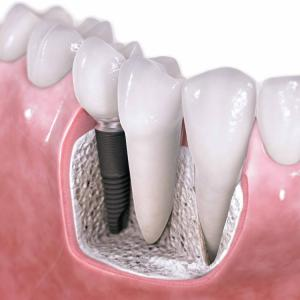
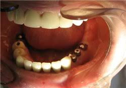
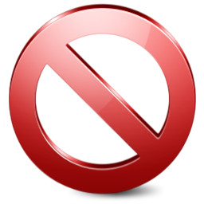

 Имплантация в стоматологии — это метод вживления искусственных опор для несъемных и съемных зубных протезов.
Имплантация имеет ряд существенных преимуществ перед традиционными методами протезирования. В частности,она позволяет пациентам получить зубные протезы, неотличимые по внешнему виду и функции от их собственных зубов. Кроме того, коронки на имплантатах служат гораздо дольше. Имплантация считается наиболее физиологичным видом протезирования.
В настоящее время для многих людей, которые лишены всех или нескольких зубов, обычное решение (съемный зубной протез) влечет за собой значительные проблемы в повседневной жизни. Появляется чувство неуверенности в себе; возникают определенные трудности и ограничения в приеме пищи, стеснение при общении с другими людьми. Обширные исследования и накопленный клинический опыт показали, что зубные имплантаты являются надежным и признанным методом протезирования, решающий множество проблем, связанных с применением зубных протезов.
Конструкция зубного имплантата состоит из двух основных частей:
1) самого имплантата, который представляет собой титановый винт, хирургическим способом вставляемый в челюсть,
2) абатмента, который изготавливается из титана и формирует связующее звено между имплантатом и сверхлежащим мостовидным протезом.
Обе части имплантата вставляются в челюсть в два этапа. На первом этапе операции имплантат вставляют в челюсть. По прошествии периода заживления к нему подсоединяется абатмент. Затем происходит заживление системы имплантата, который становится «единым целым» с костной тканью. После чего к имплантатам крепятся искусственные зубы (коронки или мостовидные протезы).
Имплантаты обеспечивают надежную опору между челюстной костью и новыми зубами. В результате зубы ощущаются, выглядят и функционируют подобно естественным.
Абсолютные:
- декомпенсированные заболевания сердечно-сосудистой системы;
- тяжелые патологии иммунной системы;
- заболевания костной системы, снижающие восстановление кости;
- тяжелые заболевания эндокринной системы;
- болезни крови;
- психиатрические заболевания, алкоголизм и наркомания;
- злокачественные опухоли;
- туберкулез;
- СПИД и венерические заболевания.
Относительные:
- пародонтит;
- патологический прикус;
- неудовлетворительная гигиена полости рта;
- предраковые заболевания полости рта;
- наличие металлических имплантатов других органов;
- заболевания височно-нижнечелюстного сустава.
Осложнения имплантации могут быть связаны с неправильной техникой установки имплантата, с нарушением пациентом рекомендаций врача, с индивидуальной реакцией организма.